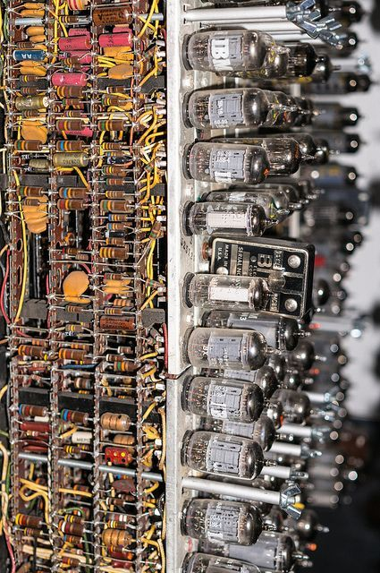
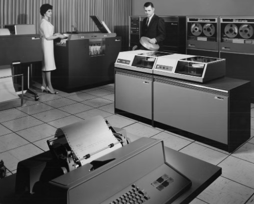
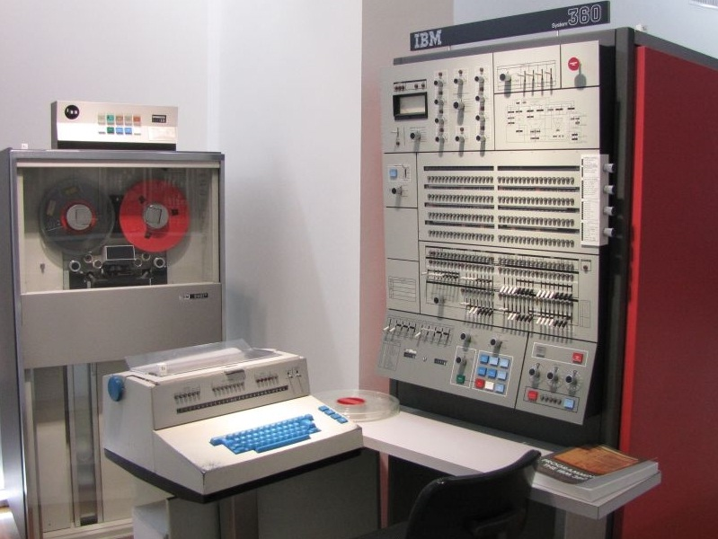
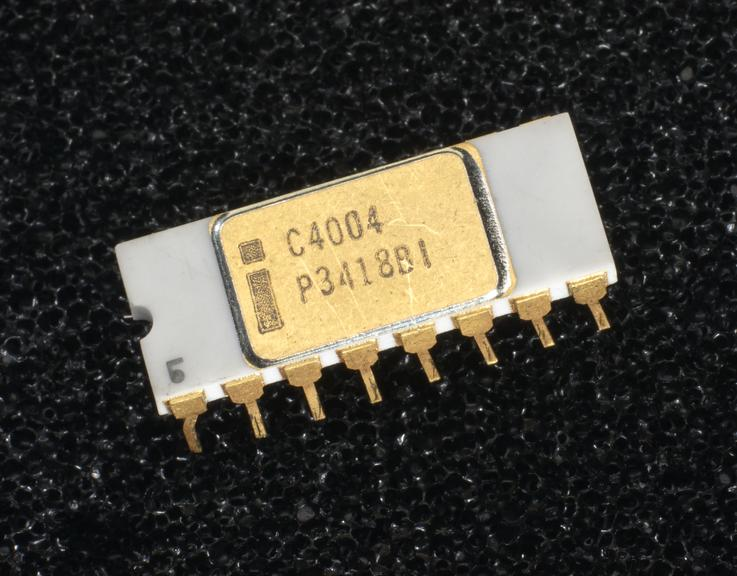
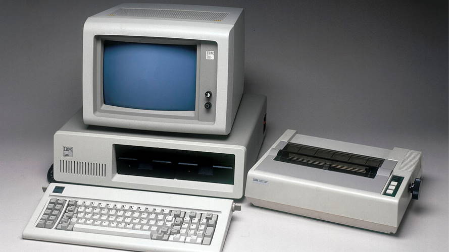
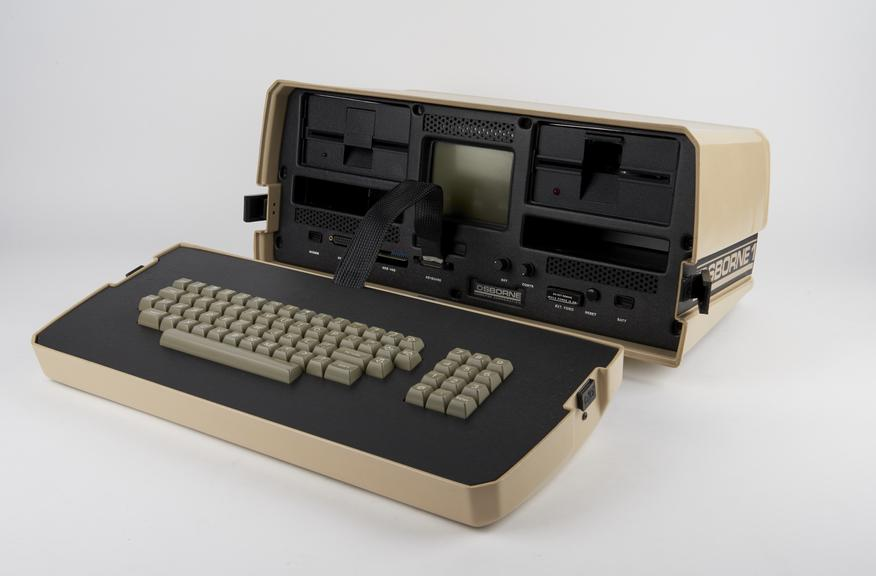

DECADA DE 1940 A 1950
Las computadoras utilizaban principalmente
tubos de vacío. Eran enormes, consumían mucha
electricidad y generaban bastante calor.

DECADA DE 1950 A 1960
Los transistores comenzaron a sustituir
a los tubos de vacío. Las computadoras se
hicieron más pequeñas, rápidas y confiables.

DECADA DE 1960 A 1970
Los circuitos integrados permitieron incorporar
múltiples componentes electrónicos en pequeños
chips, aumentando la capacidad de las computadoras.

DECADA DE 1970
La integración de la unidad central de procesamiento
en un microprocesador permitió crear computadoras
mucho más pequeñas y económicas.

DECADA 1970 A 1980
Las computadoras personales comenzaron a expandirse.
En 1981, IBM presentó su Personal Computer (IBM PC),
que tuvo una gran influencia en el mercado.

Con el desarrollo de componentes cada vez más pequeños aparecieron computadoras portátiles, que permitieron utilizar sistemas informáticos fuera de los espacios tradicionales de trabajo.
